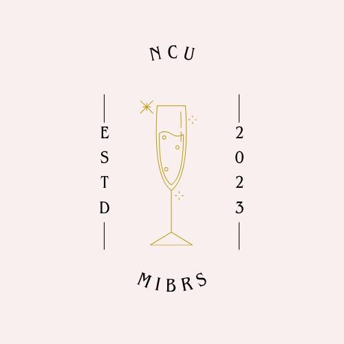
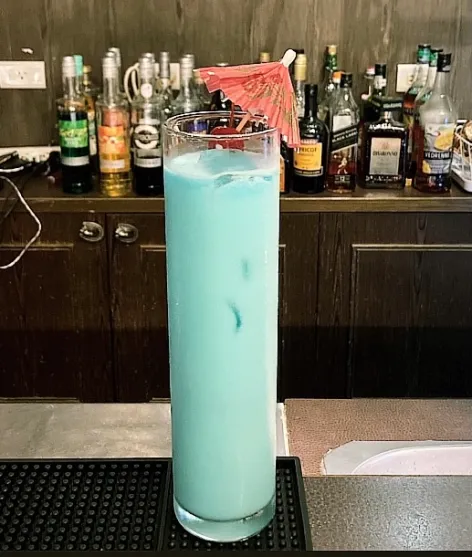
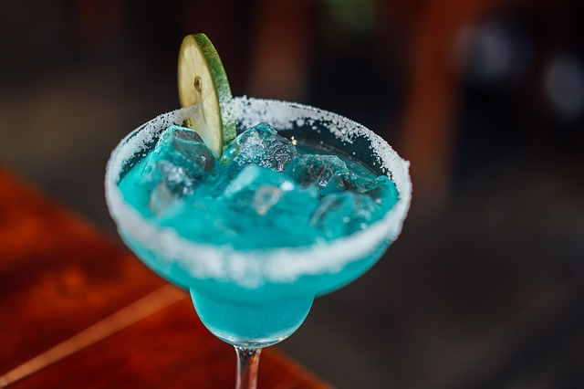
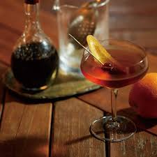
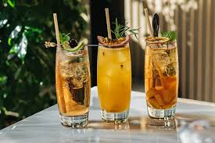
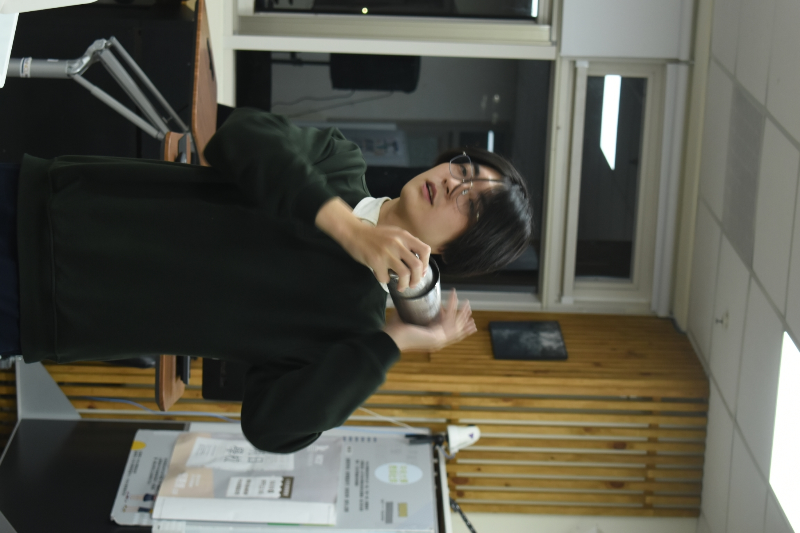
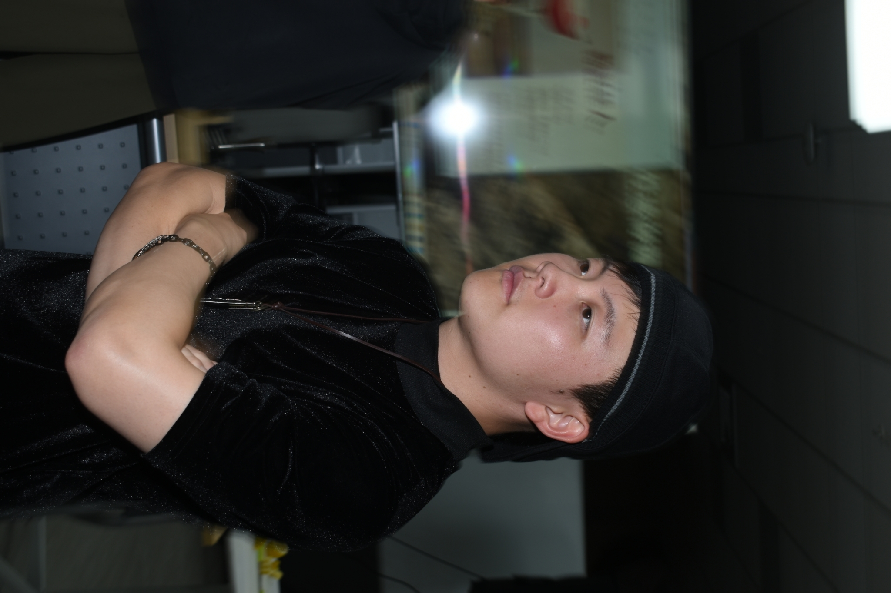

深入調酒的藝術之旅
在我們的調酒社中，每一杯調製的雞尾酒都是一場視覺和味覺的盛宴。
- 專業調酒師的匠心獨運。
- 精選優質原料，呈現最純粹的風味。
- 融合傳統與創新，帶來獨特的雞尾酒體驗。
在分子創意飲品研究社中， 我們希望這個社群作為人類豐富飲料文化的載體，
並且致力於探索與創新， 不斷嘗試不同的調酒技術與烹飪技法，
用最學術的方式做最感性的事情。 這裡不僅是學習的平台，
更是一個知識分享與交流的社群， 我們定期舉辦工作坊、講座與互動活動， 讓有興趣的人一起學習成長。
為何選擇我們
選擇我們的調酒社的理由
01
專業調酒
由經驗豐富的調酒師準備，保證每一杯都是藝術品。
02
獨特氛圍
舒適的環境，是與好友共度美好夜晚的最佳場所。
03
創意雞尾酒
不斷創新的雞尾酒菜單，總有新口味等你來探索。
菜單
探索我們精心調製的雞尾酒


特別推薦
我們的特色課程調酒
藍色夏威夷
融合了蘭姆酒、藍柑橘酒與鳳梨汁，帶來清爽的熱帶風味。
這款飲品適合炎熱夏日，絕對能讓你感受到一陣陣的清涼。

龍舌蘭日出
以新鮮石柳以及濃烈的龍舌蘭，適合春季與秋季享用。
這款飲品不僅味道豐富，中美洲的風格。

瑪格麗塔
經典瑪格麗塔的結合，使用蘋果木煙燻，創造出前所未有的味覺體驗。
情人節中不一樣的酸楚，屬於哀傷類型的雞尾酒。

經典曼哈頓
使用高品質的威士忌與苦艾酒精心調製，是酒吧中的經典之選。
這款飲品深受許多客戶的喜愛，是晚間放鬆的最佳選擇。

里約熱內盧
無酒精選擇，結合新鮮百香果與檸檬汁，甜中帶酸，非常適合夏天飲用。
清爽可口，是家庭聚會或是派對中的人氣飲品。

活動
我們曾經合作舉辦的活動
展示
曾經的活動


{kind=link}
{kind=link}
{kind=link}
{kind=link}
{kind=link}
社團幹部
第 13 屆分子創意飲品研究社幹部團隊

楊智宇
社長 | 首席調酒師資訊電機學院學士班 | 調酒經驗 3 年
擅長經典調酒與創意特調

黃曦樂
副社長 | 活動總監資訊工程學系 | 調酒經驗 2 年
負責活動策劃與外部合作

王亮崎
公關長 | 調酒講師電機工程學系 | 調酒經驗 2 年
擅長教學與分子調酒技術

陳旻偉
器材長 | 器材管理通訊工程學系 | 最高學歷的幹部

羅研安
行政長 | 財務與學校文書企業管理學系

黃正安
公關長 | 社團公關企業管理學系

施詠頡
行政長 | 行政財務企業管理學系

廖恩若
美宣長 | 美宣製圖企業管理學系

林瑜柔
教學長 | 教學與社師企業管理學系
聯絡
聯絡我們
國立中央大學 調酒社 (分子創意飲品研究社)